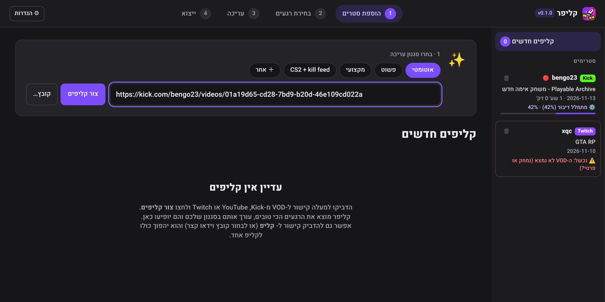
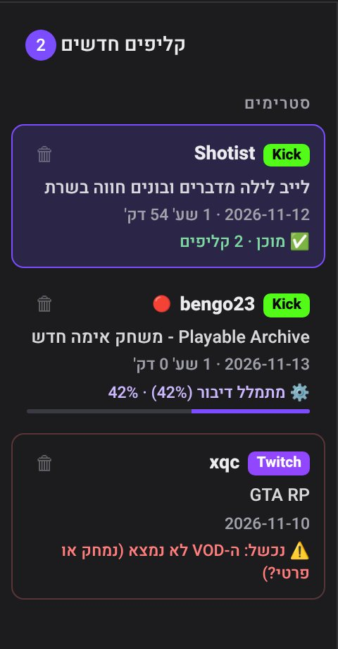

מדביקים קישור ל-VOD מ-Kick, YouTube או Twitch. קליפר מקשיב לסטרים בעברית, מוצא את הרגעים הכי טובים, חותך לפורמט אנכי ומוסיף כתוביות. אתם רק בוחרים מה לפרסם.
חינם לגמרי, בלי חשבון ובלי מנוי. הכל רץ על המחשב שלכם.
אתם משדרים כמו תמיד. אחרי השידור, כמה דקות של עבודה ויש לכם שבוע של תוכן.
קישור ל-VOD מ-Kick, YouTube או Twitch, או קובץ וידאו מהמחשב. אפשר לבחור רק חלק מהשידור, נגיד שעה מתוך חמש.

קליפר מתמלל את כל הסטרים בעברית ומדרג את הרגעים לפי צעקות, צחוקים ותגובות גדולות. מסמנים את מה שאהבתם.

מצלמה למעלה, משחק למטה, כתוביות בעברית מימין לשמאל ושם הערוץ עם הלוגו של Kick. בעורך אפשר לחתוך, להזיז ולתקן מילה בכתוביות.
שומרים MP4 למחשב, או סורקים קוד QR ומקבלים את הקליפ ישר לטלפון. משם לטיקטוק, שורטס או רילס.
כלים כאלה קיימים באנגלית. קליפר נבנה מההתחלה לעברית, לסלנג שלנו ול-Kick.
חינם, בלי חשבון ובלי מנוי. קוד פתוח.
⬇ הורדה ל-Windowsגרסת בטא. אם משהו לא עובד, נשמח לשמוע.
צריך Windows 10 או 11 (64-bit), בערך 6GB פנויים ואינטרנט. כרטיס מסך של NVIDIA מאיץ מאוד, אבל לא חובה.
משהו לא עובד? פתחו דיווח ב-GitHub ותצרפו את הקובץ %APPDATA%\BengoGames\Kliper\engine.log.